<!DOCTYPE html>
<html lang="id">
<head>
 <!-- Google Tag Manager -->
<script>(function(w,d,s,l,i){w[l]=w[l]||[];w[l].push({'gtm.start':
new Date().getTime(),event:'gtm.js'});var f=d.getElementsByTagName(s)[0],
j=d.createElement(s),dl=l!='dataLayer'?'&l='+l:'';j.async=true;j.src=
'https://www.googletagmanager.com/gtm.js?id='+i+dl;f.parentNode.insertBefore(j,f);
})(window,document,'script','dataLayer','GTM-PGXSD9HD');</script>
<!-- End Google Tag Manager -->

    <meta charset="UTF-8">
    <meta name="viewport" content="width=device-width, initial-scale=1.0">
    <title>Padang Indah Dipandang</title>

    <link rel="icon" href="public/favicon.png" type="image/png" sizes="32x32">
    <link rel="icon" href="public/favicon.png" type="image/png" sizes="16x16">

    <meta name="description" content="Temukan pembelajaran dan pengalaman baru tentang Kota Padang, by groupkotapadangintheword.">
    <meta name="keywords" content="Padang, wisata, kebudayaan, alam, Padang Indah, perjalanan, destinasi, tradisi, Nabil Vennu Pangestu, MTsN 1 Jaksel, Anak 94 MTsN 1 Jaksel, Padang Tops, PADANG TOPS">
    <meta name="author" content="Padang Indah - Nabil Vennu Pangestu">
    <link rel="canonical" href="https://padangwonderland.icu/">

    <!-- Open Graph Meta Tags for Social Media Sharing -->
    <meta property="og:title" content="Kota Sejuta Keindahan - PADANG TOPS">
    <meta property="og:description" content="Temukan pembelajaran dan pengalaman baru tentang Kota Padang, by groupkotapadangintheword.">
    <meta property="og:image" content="https://files.catbox.moe/f3ptvy.jpg">
    <meta property="og:url" content="https://padangwonderland.icu/">
    <meta property="og:type" content="website">
    <meta property="og:locale" content="id_ID">

    <!-- ROBOT TXT -->
    <meta name="robots" content="all,index,follow,noodp">

    <!-- Twitter Card Meta Tags -->
    <meta name="twitter:card" content="summary_large_image">
    <meta name="twitter:title" content="Kota Sejuta Keindahan - PADANG TOPS">
    <meta name="twitter:description" content="Temukan pembelajaran dan pengalaman baru tentang Kota Padang, by groupkotapadangintheword.">
    <meta name="twitter:image" content="https://files.catbox.moe/f3ptvy.jpg">

    <!-- External CSS & JS Libraries -->
    <link href="https://cdnjs.cloudflare.com/ajax/libs/font-awesome/6.0.0-beta3/css/all.min.css" rel="stylesheet">
    <link href="https://cdnjs.cloudflare.com/ajax/libs/tailwindcss/2.2.19/tailwind.min.css" rel="stylesheet">
    <link href="https://unpkg.com/aos@2.3.1/dist/aos.css" rel="stylesheet">
    <link href="scam.css" rel="stylesheet">

    <!-- Include Vue.js -->
    <script src="https://cdn.jsdelivr.net/npm/vue@2.6.14/dist/vue.js"></script>
    

</head>
<body class="bg-white text-gray-800" id="app">
  <!-- Google Tag Manager (noscript) -->
<noscript><iframe src="https://www.googletagmanager.com/ns.html?id=GTM-PGXSD9HD"
height="0" width="0" style="display:none;visibility:hidden"></iframe></noscript>
<!-- End Google Tag Manager (noscript) -->
    <div id="app">
        <!-- Konten Vue.js Anda akan dimasukkan di sini -->
    </div>

    <!-- Vue.js Script -->
    <script>
        new Vue({
            el: '#app',
            data: {
                // Data Vue.js Anda
            },
            methods: {
                // Metode Vue.js Anda
            }
        });
    </script>
</body>
</html>

<!-- Navbar -->
<nav id="navbar" class="text-white p-5 fixed w-full top-0 transition-all duration-300 ease-in-out z-20 bg-transparent shadow-lg" style="font-family: 'Alhabsyi', sans-serif;">
    <div class="container mx-auto flex items-center justify-between">
        <!-- Logo -->
        <h1 class="text-2xl md:text-3xl font-extrabold tracking-wide text-red-500">
            Padang<span class="text-white">Explores</span>
        </h1>

        <!-- Menu Desktop -->
        <div class="hidden md:flex md:space-x-8">
            <a href="#tentang" class="menu-link hover:text-red-300 transition duration-200 font-semibold">Tentang</a>
            <a href="#wisata" class="menu-link hover:text-red-300 transition duration-200 font-semibold">Wisata Alam</a>
            <a href="#budaya" class="menu-link hover:text-red-300 transition duration-200 font-semibold">Budaya</a>
            <a href="#gallery" class="menu-link hover:text-red-300 transition duration-200 font-semibold">Gallery</a>
            <a href="#faq" class="menu-link hover:text-red-300 transition duration-200 font-semibold">FAQ</a>
            <a href="#kontak" class="menu-link hover:text-red-300 transition duration-200 font-semibold">Kontak</a>
            <a href="class94.html" class="menu-link hover:text-red-300 transition duration-200 font-semibold">Class 94</a>
        </div>

        <div class="md:hidden">
            <button id="menu-toggle" class="focus:outline-none">
                <svg xmlns="http://www.w3.org/2000/svg" class="h-6 w-6 text-red-600" fill="none" viewBox="0 0 24 24" stroke="currentColor">
                    <path stroke-linecap="round" stroke-linejoin="round" stroke-width="2" d="M4 6h16M4 12h16m-7 6h7" />
                </svg>
            </button>
        </div>

    
    <!-- Menu Mobile -->
    <ul id="menu" class="md:hidden fixed top-0 left-0 w-full h-full bg-red-500/90 text-white hidden flex-col space-y-6 justify-center items-center shadow-xl p-8 transform transition-transform duration-300">
        <!-- Close Button -->
        <button id="menu-close" class="absolute top-5 right-5 text-white text-3xl focus:outline-none">&times;</button>

          <!-- Menu Items -->
            <li><a href="#tentang" class="block py-4 transition text-xl font-semibold hover:text-red-300">Tentang</a></li>
            <li><a href="#wisata" class="block py-4 transition text-xl font-semibold hover:text-red-300">Wisata Alam</a></li>
            <li><a href="#budaya" class="block py-4 transition text-xl font-semibold hover:text-red-300">Budaya</a></li>
            <a href="#gallery" class="menu-link hover:text-red-300 transition duration-200 font-semibold">Gallery</a>
            <li><a href="#faq" class="block py-4 transition text-xl font-semibold hover:text-red-300">FAQ</a></li>
            <li><a href="#kontak" class="block py-4 transition text-xl font-semibold hover:text-red-300">Kontak</a></li>
            <a href="class94.html" class="menu-link hover:text-red-300 transition duration-200 font-semibold">Class 94</a>
        </ul>
</nav>


<!-- Hero Section dengan Background Padang dan Parallax -->
<section id="home" class="relative h-screen bg-cover bg-center" style="background-image: url('https://files.catbox.moe/tetd6c.jpg'); background-attachment: fixed;">
    <!-- Overlay Gelap untuk Background -->
    <div class="absolute inset-0 bg-gradient-to-t from-black via-transparent to-black opacity-70"></div>

    <!-- Konten Teks dan Tombol -->
    <div class="relative z-10 flex flex-col items-center justify-center h-full text-center text-white space-y-6 px-4">
        <h2 class="text-5xl md:text-6xl font-extrabold tracking-wide mb-4 drop-shadow-xl leading-tight">
            Jelajahi Pesona <span class="text-red-600">Padang</span>
        </h2>
        <p class="text-lg md:text-2xl font-light max-w-3xl mx-auto mb-8 drop-shadow-lg leading-relaxed">
            Temukan keindahan alam dan kekayaan budaya <strong>Minangkabau</strong>, dari 
            <span class="font-bold">pantai indah</span> hingga kuliner legendaris seperti <em>Rendang</em>. 
            Bersama <span class="font-semibold text-red-600">Nabil Vennu Pangestu and Team</span>.
        </p>

        <!-- Tombol dengan Animasi Elegan -->
        <div class="flex gap-4">
            <a href="#tentang" class="px-8 py-3 bg-red-600 hover:bg-white hover:text-red-600 text-white font-bold rounded-full shadow-xl transition-all duration-300 transform hover:scale-110 hover:shadow-2xl">
                Pelajari Lebih Lanjut
            </a>
            <a href="#gallery" class="px-8 py-3 border border-red-600 text-red-600 hover:bg-red-600 hover:text-white font-bold rounded-full shadow-xl transition-all duration-300 transform hover:scale-110 hover:shadow-2xl">
                Lihat Galeri
            </a>
        </div>
    </div>
</section>


<!-- Section Pembuka Bhineka Tunggal Ika -->
<div class="relative flex flex-col md:flex-row items-center justify-center p-6 md:p-10 bg-white  mb-29 overflow-hidden">
    <!-- Elemen Lingkaran Bercahaya -->
    <div class="absolute top-0 left-0 w-40 h-40 bg-red-500 rounded-full opacity-70 blur-xl"></div>
    <div class="absolute bottom-0 right-0 w-48 h-48 bg-red-600 rounded-full opacity-60 blur-2xl"></div>
    <div class="absolute top-1/3 left-1/4 w-24 h-24 bg-red-400 rounded-full opacity-50 blur-lg"></div>

    <div class="max-w-4xl flex flex-col md:flex-row items-center" data-aos="zoom-in">
        <!-- Bagian Penjelasan Teks -->
        <div class="flex-1 pr-0 md:pr-8 mb-6 md:mb-0">
            <h2 class="text-2xl md:text-3xl font-bold text-gray-800 font-serif flex items-center">
                <i class="fa-brands fa-unity mr-3 text-red-600"></i> Bhineka Tunggal Ika
            </h2>
            <p class="mt-4 text-lg text-gray-700 leading-relaxed font-medium">
                <i class="fas fa-quote-left text-gray-400"></i>
                <em>Bhineka Tunggal Ika</em> adalah semboyan bangsa Indonesia yang berarti "Berbeda-beda tetapi tetap satu jua." 
                Meskipun kita memiliki perbedaan dalam budaya, suku, dan agama, tujuan kita sama yaitu 
                <span class="text-red-600 font-extrabold">Merdeka</span>.
                <i class="fas fa-quote-right text-gray-400"></i>
            </p>
            <p class="mt-4 text-md text-gray-600 font-light flex items-center">
                <i class="fas fa-dove mr-2 text-gray-500"></i> 
                Semangat persatuan ini mencerminkan keberagaman Indonesia yang tetap menjunjung tinggi kebersamaan dan toleransi.
            </p>
        </div>

        <!-- Bagian Gambar -->
        <div class="flex-1 text-center md:text-left mt-6 md:mt-0">
            
        </div>
    </div>
</div>

<style>
    /* Efek Lingkaran Bercahaya */
    .relative {
        position: relative;
    }

    .overflow-hidden {
        overflow: hidden;
    }

    .blur-xl {
        filter: blur(40px);
    }

    .blur-2xl {
        filter: blur(60px);
    }

    .blur-lg {
        filter: blur(30px);
    }

    .bg-red-400 {
        background-color: rgba(248, 113, 113, 0.5);
    }

    .bg-red-500 {
        background-color: rgba(239, 68, 68, 0.7);
    }

    .bg-red-600 {
        background-color: rgba(220, 38, 38, 0.6);
    }
</style>

<!-- Team Section -->
<section class="team-section py-10 bg-gray-50 text-center mt-10">
    <h2 class="text-2xl font-bold text-gray-800 mb-8">Meet Our Team</h2>
    <div class="flex flex-wrap gap-6 justify-center">
        <!-- Card Raka - Ketua -->
        <div class="card border border-gray-200 rounded-lg shadow-md p-6 w-48 md:w-56 lg:w-64 flex flex-col items-center bg-white hover:shadow-lg transition duration-300">
            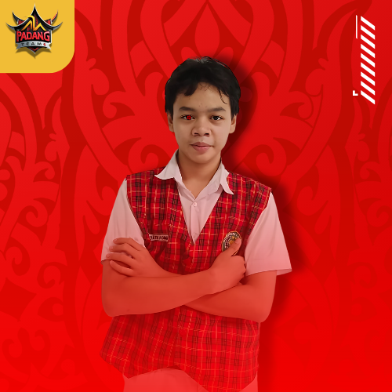
            <h3 class="text-lg font-semibold text-gray-800">Rakha Tri Hamadi</h3>
            <p class="text-sm text-gray-600"><i class="fas fa-user-tie"></i> Ketua</p>
            <a href="path/to/raka_cv.pdf" download class="mt-4 px-4 py-2 text-sm font-semibold text-white bg-gradient-to-r from-red-500 to-red-700 rounded-full hover:from-red-600 hover:to-red-800 focus:outline-none transition">
                Download CV
            </a>
        </div>

        <!-- Card Nizam - Wakil Ketua -->
        <div class="card border border-gray-200 rounded-lg shadow-md p-6 w-48 md:w-56 lg:w-64 flex flex-col items-center bg-white hover:shadow-lg transition duration-300">
            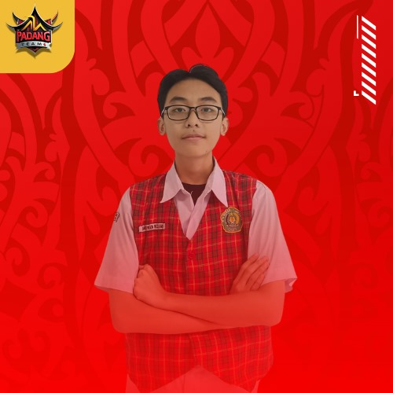
            <h3 class="text-lg font-semibold text-gray-800">Shofwan Nizami</h3>
            <p class="text-sm text-gray-600"><i class="fas fa-user"></i> Wakil Ketua</p>
            <a href="src/assets/cv/CVNIZAM.pdf" download class="mt-4 px-4 py-2 text-sm font-semibold text-white bg-gradient-to-r from-red-500 to-red-700 rounded-full hover:from-red-600 hover:to-red-800 focus:outline-none transition">
                Download CV
            </a>
        </div>

        <!-- Card Kafa - Dokumentator -->
        <div class="card border border-gray-200 rounded-lg shadow-md p-6 w-48 md:w-56 lg:w-64 flex flex-col items-center bg-white hover:shadow-lg transition duration-300">
            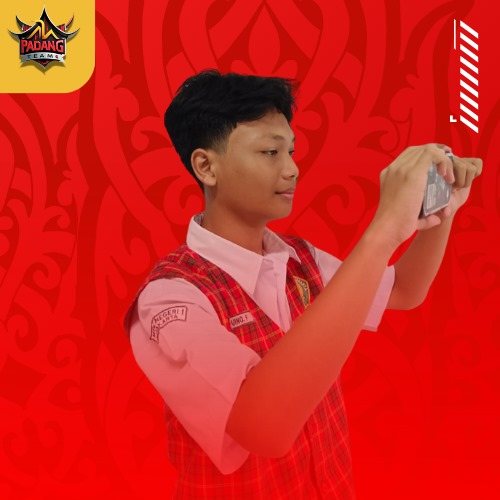
            <h3 class="text-lg font-semibold text-gray-800">Kafa Aquino FS</h3>
            <p class="text-sm text-gray-600"><i class="fas fa-camera"></i> Dokumentator</p>
            <a href="src/assets/cv/CVKAFA.pdf" download class="mt-4 px-4 py-2 text-sm font-semibold text-white bg-gradient-to-r from-red-500 to-red-700 rounded-full hover:from-red-600 hover:to-red-800 focus:outline-none transition">
                Download CV
            </a>
        </div>
        
        <!-- Card Nabil - Programmer -->
        <div class="card border border-gray-200 rounded-lg shadow-md p-6 w-48 md:w-56 lg:w-64 flex flex-col items-center bg-white hover:shadow-lg transition duration-300">
            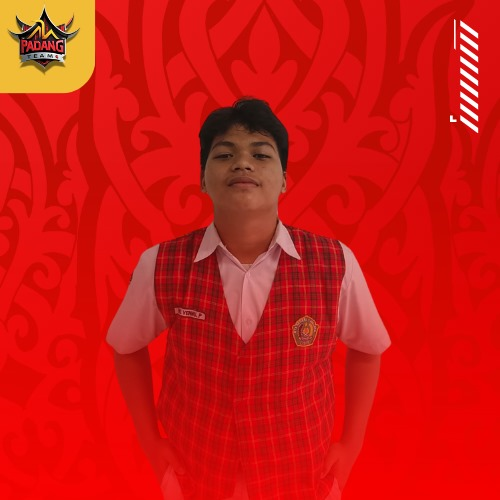
            <h3 class="text-lg font-semibold text-gray-800">Nabil Vennu Pangestu</h3>
            <p class="text-sm text-gray-600"><i class="fas fa-laptop-code"></i> Programmer</p>
            <a href="src/assets/cv/CVNABILVP.pdf" download class="mt-4 px-4 py-2 text-sm font-semibold text-white bg-gradient-to-r from-red-500 to-red-700 rounded-full hover:from-red-600 hover:to-red-800 focus:outline-none transition">
                Download CV
            </a>
        </div>

        <!-- Card Salma - Presentasi -->
        <div class="card border border-gray-200 rounded-lg shadow-md p-6 w-48 md:w-56 lg:w-64 flex flex-col items-center bg-white hover:shadow-lg transition duration-300">
            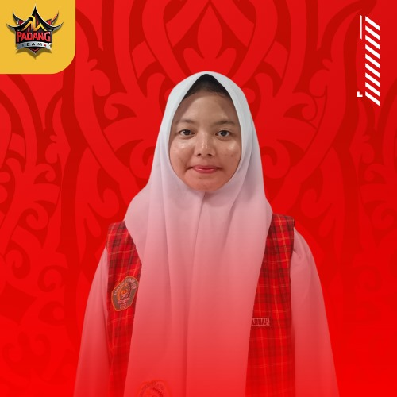
            <h3 class="text-lg font-semibold text-gray-800">Salma Fathiyya Aqilla</h3>
            <p class="text-sm text-gray-600"><i class="fas fa-clipboard"></i> Presentator</p>
            <a href="src/assets/cv/CVSALMA.pdf" download class="mt-4 px-4 py-2 text-sm font-semibold text-white bg-gradient-to-r from-red-500 to-red-700 rounded-full hover:from-red-600 hover:to-red-800 focus:outline-none transition">
                Download CV
            </a>
        </div>

        <!-- Card Aqila - Presentasi -->
        <div class="card border border-gray-200 rounded-lg shadow-md p-6 w-48 md:w-56 lg:w-64 flex flex-col items-center bg-white hover:shadow-lg transition duration-300">
            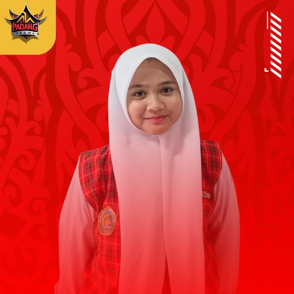
            <h3 class="text-lg font-semibold text-gray-800">Aqila Zakiyah Zahra</h3>
            <p class="text-sm text-gray-600"><i class="fas fa-clipboard"></i> Presentator</p>
            <a href="src/assets/cv/CVAQILA.pdf" download class="mt-4 px-4 py-2 text-sm font-semibold text-white bg-gradient-to-r from-red-500 to-red-700 rounded-full hover:from-red-600 hover:to-red-800 focus:outline-none transition">
                Download CV
            </a>
        </div>

        <!-- Card Rani - Moderator -->
        <div class="card border border-gray-200 rounded-lg shadow-md p-6 w-48 md:w-56 lg:w-64 flex flex-col items-center bg-white hover:shadow-lg transition duration-300">
            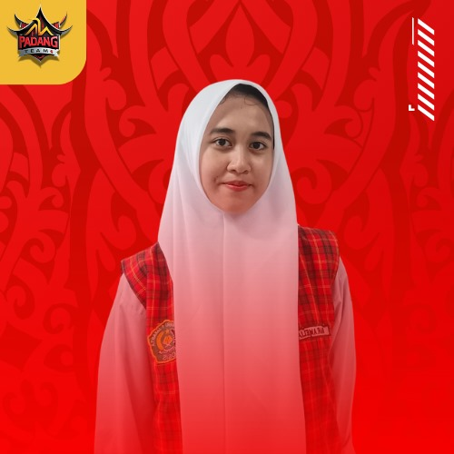
            <h3 class="text-lg font-semibold text-gray-800">Rani Ameila</h3>
            <p class="text-sm text-gray-600"><i class="fas fa-clipboard"></i> Moderator</p>
            <a href="src/assets/cv/CVRANI.pdf" download class="mt-4 px-4 py-2 text-sm font-semibold text-white bg-gradient-to-r from-red-500 to-red-700 rounded-full hover:from-red-600 hover:to-red-800 focus:outline-none transition">
                Download CV
            </a>
        </div>
    </div>
</section>


  <section class="relative bg-cover bg-center h-screen" style="background-image: url('public/img/padangvisimisi.jpg'); background-attachment: fixed;">
    <div class="absolute inset-0 bg-black opacity-60"></div> <!-- Overlay for better text visibility -->
    <div class="relative z-10 flex items-center justify-center h-full">
        <div class="bg-white bg-opacity-80 backdrop-blur-lg p-6 rounded-lg shadow-lg max-w-2xl mx-auto text-center">
            <h2 class="text-red-600 font-bold text-2xl mb-6" data-aos="fade-up">
                <i class="fas fa-bullseye mr-2"></i> Visi dan Misi Kelompok Kami
            </h2>

            <div class="mt-5">
                <h3 class="text-red-700 font-bold" data-aos="fade-up" data-aos-delay="400">
                    <i class="fas fa-eye mr-2"></i> Visi
                </h3>
                <p class="text-gray-800 leading-relaxed text-base" data-aos="fade-down" data-aos-delay="700">
                    Memperkenalkan budaya Indonesia kepada dunia luar,dan memperkenalkan budaya khas sumtara yaitu padang dan menjadi team yang solid serta berinovatif.
                </p>
            </div>

            <div class="mt-5">
                <h3 class="text-red-700 font-bold" data-aos="fade-right" data-aos-delay="400">
                    <i class="fas fa-flag-checkered mr-2"></i> Misi
                </h3>
                <ul class="text-gray-800 leading-relaxed text-base pl-5 list-disc" data-aos="zoom-in" data-aos-delay="900">
                    <li><i class="fas fa-users mr-2"></i> Meningkatkan pengetahuan siswa siswi dalam provinsi sumatra.</li>
                    <li><i class="fas fa-lightbulb mr-2"></i> Berharap siswa siswi bisa menjelaskan keunikan daerah padang.</li>
                    <li><i class="fas fa-globe mr-2"></i> Memperluas wawasan pelajar dalam daerah di indonesia terurtama padang.</li>
                    <li><i class="fas fa-globe mr-2"></i> Meningkatkan rasa nasionalisme dan kebanggaan terhadap budaya dan nilai-nilai bangsa.</li>
                    <li><i class="fas fa-handshake mr-2"></i> Berharap tidak ada ke salah pahaman dalam mempelajari daerah padang.</li>
                </ul>
            </div>
        </div>

        <!-- Mascot on the Left (visible on larger screens) -->
        <div class="absolute left-10 hidden md:block"> <!-- Changed hidden class to only apply for small screens -->
             <!-- Increased size -->
        </div>

        <!-- Mascot on the Right (visible on larger screens) -->
        <div class="absolute right-10 hidden md:block"> <!-- Changed hidden class to only apply for small screens -->
             <!-- Increased size -->
        </div>
    </div>
  </section>

  <!-- Add spacing before the next section -->
  <section class="h-20"></section> <!-- This creates a spacer -->

<section class="bg-white py-12">
  <div class="container mx-auto px-6 lg:px-16">
    <h2 class="text-3xl font-bold text-red-600 text-center mb-6">Selamat Datang di Kota Padang</h2>
    <p class="text-gray-700 text-center mb-10">
      Kota Padang, ibu kota Provinsi Sumatera Barat, terkenal dengan keindahan alam, budaya yang kaya, dan kuliner yang mendunia. 
      Berikut adalah beberapa informasi menarik tentang Kota Padang.
    </p>

    <div class="grid grid-cols-1 md:grid-cols-2 lg:grid-cols-3 gap-6">
      <!-- Card 1 -->
      <div class="bg-red-50 border border-red-200 rounded-lg p-6 shadow-md">
        <h3 class="text-xl font-semibold text-red-600 mb-2">Penduduk</h3>
        <p class="text-gray-700">
          Kota Padang memiliki jumlah penduduk sekitar 1 juta jiwa (2025), yang terdiri dari berbagai suku, mayoritasnya adalah Minangkabau. 
          Kota ini menjadi pusat budaya Minangkabau yang kaya akan tradisi.
        </p>
      </div>
      <!-- Card 2 -->
      <div class="bg-red-50 border border-red-200 rounded-lg p-6 shadow-md">
        <h3 class="text-xl font-semibold text-red-600 mb-2">Luas Wilayah</h3>
        <p class="text-gray-700">
          Kota Padang memiliki luas wilayah sekitar 695 km², yang mencakup wilayah pantai, pegunungan, dan kawasan perkotaan.
        </p>
      </div>
      <!-- Card 3 -->
      <div class="bg-red-50 border border-red-200 rounded-lg p-6 shadow-md">
        <h3 class="text-xl font-semibold text-red-600 mb-2">Pantai Padang</h3>
        <p class="text-gray-700">
          Pantai Padang menawarkan pemandangan matahari terbenam yang memukau dan menjadi tempat favorit untuk bersantai bersama keluarga.
        </p>
      </div>
      <!-- Card 4 -->
      <div class="bg-red-50 border border-red-200 rounded-lg p-6 shadow-md">
        <h3 class="text-xl font-semibold text-red-600 mb-2">Kuliner Rendang</h3>
        <p class="text-gray-700">
          Rendang, hidangan khas Padang, telah diakui sebagai salah satu makanan terenak di dunia oleh berbagai publikasi internasional.
        </p>
      </div>
      <!-- Card 5 -->
      <div class="bg-red-50 border border-red-200 rounded-lg p-6 shadow-md">
        <h3 class="text-xl font-semibold text-red-600 mb-2">Lembah Anai</h3>
        <p class="text-gray-700">
          Air terjun Lembah Anai merupakan ikon wisata alam di Padang yang dikelilingi oleh pemandangan hijau yang memanjakan mata.
        </p>
      </div>
      <!-- Card 6 -->
      <div class="bg-red-50 border border-red-200 rounded-lg p-6 shadow-md">
        <h3 class="text-xl font-semibold text-red-600 mb-2">Jembatan Siti Nurbaya</h3>
        <p class="text-gray-700">
          Jembatan ini menjadi landmark ikonik di Padang, terkenal dengan pemandangan malam hari yang dihiasi lampu-lampu indah.
        </p>
      </div>
    </div>
  </div>
</section>

 <!-- Tentang Padang -->
 <section id="tentang" class="py-16 px-8 bg-white mt-16 relative overflow-hidden">
     <div class="absolute inset-0 bg-cover bg-center" style="background-image: url('public/img/bgpadang.svg'); opacity: 0.4;"></div>
     <div class="relative z-10">
         <h2 class="text-4xl font-extrabold text-center text-red-600 mb-6 animate__animated animate__fadeInDown">Tentang Padang</h2>
         <p class="text-lg text-center max-w-3xl mx-auto animate__animated animate__fadeIn animate__delay-1s">Padang, ibu kota Sumatera Barat, dikenal dengan pesona alamnya yang luar biasa. Dari pantai indah di Pantai Air Manis hingga kelezatan kuliner khas seperti Rendang, Padang adalah destinasi wisata yang memikat.</p>

         <div class="grid grid-cols-1 md:grid-cols-2 lg:grid-cols-3 gap-8 mt-10">
             <!-- Card 1 -->
             <div class="bg-white p-8 rounded-xl shadow-lg hover:shadow-2xl transition-shadow transform hover:scale-105 duration-300" data-aos="fade-right" data-aos-delay="500">
                 <h3 class="text-2xl font-semibold text-red-600 mb-4">Keindahan Alam</h3>
                 <p class="text-gray-700">Nikmati pesona alam Padang, dari Pantai Air Manis hingga pegunungan yang menawan.</p>
             </div>
             <!-- Card 2 -->
             <div class="bg-white p-8 rounded-xl shadow-lg hover:shadow-2xl transition-shadow transform hover:scale-105 duration-300" data-aos="fade-up" data-aos-delay="300">
                 <h3 class="text-2xl font-semibold text-red-600 mb-4">Budaya Khas</h3>
                 <p class="text-gray-700">Rasakan keberagaman budaya Minangkabau, dengan rumah adat dan tari tradisional yang memukau.</p>
             </div>
             <!-- Card 3 -->
             <div class="bg-white p-8 rounded-xl shadow-lg hover:shadow-2xl transition-shadow transform hover:scale-105 duration-300" data-aos="fade-left" data-aos-delay="700">
                 <h3 class="text-2xl font-semibold text-red-600 mb-4">Kuliner Legendaris</h3>
                 <p class="text-gray-700">Padang terkenal dengan kuliner lezat seperti Rendang, Sate Padang, dan Nasi Padang yang menggugah selera.</p>
             </div>
         </div>

         <div class="text-center mt-8" data-aos="fade-down" data-aos-delay="1100">
             <a href="#wisata" class="bg-red-600 text-white font-semibold py-3 px-6 rounded-lg hover:bg-red-700 transition-colors transform hover:scale-105 duration-200">Jelajahi Lebih Lanjut</a>
         </div>
     </div>
 </section>

<section class="bg-white py-12 mt-16">
  <div class="container mx-auto px-6 lg:px-16">
    <h2 class="text-3xl font-bold text-red-600 text-center mb-6">Baju Adat Minangkabau</h2>
    <div class="grid grid-cols-1 md:grid-cols-2 gap-8 items-center">
      <!-- Image of Baju Adat -->
      <div data-aos="fade-right">
        
      </div>
      <!-- Description of Baju Adat -->
      <div data-aos="zoom-in" class="space-y-4 text-gray-700">
        <p class="text-lg">
          Baju adat Minangkabau mencerminkan budaya yang kaya dan penuh makna. Pakaian tradisional ini biasanya dikenakan pada acara adat, seperti pernikahan, upacara adat, dan perayaan penting lainnya.
        </p>
        <ul class="list-disc list-inside space-y-2">
          <li>
            <strong>Limpapeh Rumah Nan Gadang:</strong> Baju adat wanita yang melambangkan kehormatan dan kebijaksanaan.
          </li>
          <li>
            <strong>Destar atau Deta:</strong> Penutup kepala pria yang menunjukkan kebijaksanaan dan tanggung jawab sebagai pemimpin.
          </li>
          <li>
            <strong>Songket Minangkabau:</strong> Kain tenun tradisional dengan motif khas yang memperlihatkan keindahan seni Minang.
          </li>
        </ul>
        <p class="text-lg">
          Setiap elemen dari pakaian adat ini memiliki filosofi mendalam yang mencerminkan nilai-nilai kehidupan masyarakat Minangkabau.
        </p>
      </div>
    </div>
  </div>
</section>

<section class="bg-white py-12 mt-16">
  <div class="container mx-auto px-6 lg:px-16">
    <h2 class="text-3xl font-bold text-red-600 text-center mb-6">Dari Padang ke Nusantara: Baju Adat Indonesia</h2>
    <p class="text-center text-gray-600 mb-8">
      Keindahan pakaian adat mencerminkan kekayaan budaya di setiap daerah. Yuk, kenali beberapa baju adat dari Padang dan daerah lain di Nusantara!
    </p>
    <div class="grid grid-cols-1 md:grid-cols-2 lg:grid-cols-3 gap-8">

      <!-- Baju Adat Minangkabau -->
      <div data-aos="fade-up" class="relative bg-gray-100 rounded-lg shadow-md p-6 group hover:scale-105 transform transition">
        
        <h3 class="text-xl font-semibold text-gray-800 group-hover:text-red-600 transition">Minangkabau</h3>
        <p class="text-gray-600 mt-2">
          Baju adat Minangkabau menggunakan songket dan mahkota "Suntiang," melambangkan martabat dan nilai budaya yang luhur.
        </p>
      </div>

      <!-- Baju Adat Melayu -->
      <div data-aos="fade-up" class="relative bg-gray-100 rounded-lg shadow-md p-6 group hover:scale-105 transform transition">
        
        <h3 class="text-xl font-semibold text-gray-800 group-hover:text-red-600 transition">Melayu</h3>
        <p class="text-gray-600 mt-2">
          Pakaian adat Melayu khas dengan kain songket berornamen emas yang mencerminkan kemegahan dan kehormatan.
        </p>
      </div>

      <!-- Baju Adat Batak -->
      <div data-aos="fade-up" class="relative bg-gray-100 rounded-lg shadow-md p-6 group hover:scale-105 transform transition">
        
        <h3 class="text-xl font-semibold text-gray-800 group-hover:text-red-600 transition">Batak</h3>
        <p class="text-gray-600 mt-2">
          Kain ulos menjadi ciri khas baju adat Batak, simbol ikatan keluarga dan penghormatan dalam masyarakat.
        </p>
      </div>

      <!-- Baju Adat Aceh -->
      <div data-aos="fade-up" class="relative bg-gray-100 rounded-lg shadow-md p-6 group hover:scale-105 transform transition">
        
        <h3 class="text-xl font-semibold text-gray-800 group-hover:text-red-600 transition">Aceh</h3>
        <p class="text-gray-600 mt-2">
          Baju adat Aceh memiliki motif emas yang melambangkan kejayaan dan budaya Islam yang kuat di Serambi Mekah.
        </p>
      </div>

      <!-- Baju Adat Mandailing -->
      <div data-aos="fade-up" class="relative bg-gray-100 rounded-lg shadow-md p-6 group hover:scale-105 transform transition">
        
        <h3 class="text-xl font-semibold text-gray-800 group-hover:text-red-600 transition">Mandailing</h3>
        <p class="text-gray-600 mt-2">
          Dengan ornamen tradisional dan kain khas, pakaian adat Mandailing melambangkan kebesaran adat mereka.
        </p>
      </div>

      <!-- Baju Adat Minahasa -->
      <div data-aos="fade-up" class="relative bg-gray-100 rounded-lg shadow-md p-6 group hover:scale-105 transform transition">
        
        <h3 class="text-xl font-semibold text-gray-800 group-hover:text-red-600 transition">Minahasa</h3>
        <p class="text-gray-600 mt-2">
          Dominasi warna hitam dan merah melambangkan keberanian serta kebijaksanaan masyarakat Minahasa.
        </p>
      </div>

    </div>
  </div>
</section>


<section class="bg-red-50 py-12 mt-16">
  <div class="container mx-auto px-6 lg:px-16">
    <h2 class="text-3xl font-bold text-red-600 text-center mb-6">Fakta Unik tentang Kota Padang</h2>
    <ul class="space-y-6">
      <!-- Fakta 1 -->
      <li class="flex items-start">
        <div class="text-red-600 text-2xl mr-4">
          <i class="fas fa-store-alt"></i>
        </div>
        <p class="text-gray-700">
          Kota Padang adalah salah satu pusat perdagangan tertua di Indonesia sejak era kolonial Belanda.
        </p>
      </li>
      <!-- Fakta 2 -->
      <li class="flex items-start">
        <div class="text-red-600 text-2xl mr-4">
          <i class="fas fa-water"></i>
        </div>
        <p class="text-gray-700">
          Padang menjadi pintu gerbang menuju Kepulauan Mentawai, destinasi selancar kelas dunia.
        </p>
      </li>
        <!-- Fakta 3 -->
        <li class="flex items-start">
          <div class="text-red-600 text-2xl mr-4">
            <i class="fas fa-leaf"></i>
          </div>
          <div>
            <p class="text-gray-700 font-semibold">
              Masyarakat Padang terkenal dengan filosofi hidup mereka, yaitu "Adat Basandi Syara', Syara' Basandi Kitabullah."
            </p>
            <p class="text-gray-600 mt-2">
              Filosofi ini berarti adat istiadat harus berlandaskan ajaran agama, sementara agama berpijak pada kitab suci. 
              Prinsip ini menjadi pedoman masyarakat Minangkabau dalam menjaga harmoni antara tradisi dan nilai-nilai Islam, 
              menjadikan Padang sebagai kota dengan budaya yang kuat namun tetap modern.
            </p>
          </div>
        </li>
    </ul>
  </div>
</section>


<!-- Tambahkan Swiper.js -->
<link rel="stylesheet" href="https://unpkg.com/swiper/swiper-bundle.min.css" />
<script src="https://unpkg.com/swiper/swiper-bundle.min.js"></script>

<!-- Wisata Alam Padang -->
<section id="wisata" class="py-16 px-8 bg-white mt-16 relative">
    <div class="relative z-10">
        <!-- Title -->
        <h2 class="text-4xl font-extrabold text-center text-red-600 mb-8 animate__animated animate__fadeInDown">Wisata Alam Padang</h2>

        <!-- Swiper Container -->
        <div class="swiper-container">
            <div class="swiper-wrapper">
                <!-- Slide 1: Pantai Air Manis -->
                <div class="swiper-slide bg-white p-6 rounded-xl shadow-xl transition-shadow transform hover:scale-105 duration-300 ease-in-out text-center">
                    
                    <h3 class="text-2xl font-semibold text-red-600 mb-4">Pantai Air Manis</h3>
                    <p class="text-gray-700 text-base">Pantai yang terkenal dengan legenda Malin Kundang dan pemandangan laut yang mempesona.</p>
                </div>
                <!-- Slide 2: Bukit Pergasingan -->
                <div class="swiper-slide bg-white p-6 rounded-xl shadow-xl transition-shadow transform hover:scale-105 duration-300 ease-in-out text-center">
                    
                    <h3 class="text-2xl font-semibold text-red-600 mb-4">Bukit Pergasingan</h3>
                    <p class="text-gray-700 text-base">Bukit yang menawarkan pemandangan indah kota Padang dari ketinggian, cocok untuk pendakian ringan.</p>
                </div>
                <!-- Slide 3: Danau Singkarak -->
                <div class="swiper-slide bg-white p-6 rounded-xl shadow-xl transition-shadow transform hover:scale-105 duration-300 ease-in-out text-center">
                    
                    <h3 class="text-2xl font-semibold text-red-600 mb-4">Danau Singkarak</h3>
                    <p class="text-gray-700 text-base">Danau alami terbesar kedua di Sumatra dengan air yang jernih dan pemandangan sekitar yang menakjubkan.</p>
                </div>
                <!-- Slide 4: Lembah Harau -->
                <div class="swiper-slide bg-white p-6 rounded-xl shadow-xl transition-shadow transform hover:scale-105 duration-300 ease-in-out text-center">
                    
                    <h3 class="text-2xl font-semibold text-red-600 mb-4">Lembah Harau</h3>
                    <p class="text-gray-700 text-base">Lembah indah dengan tebing curam, air terjun, dan suasana alami yang memukau.</p>
                </div>
                <!-- Slide 5: Pantai Nirwana -->
                <div class="swiper-slide bg-white p-6 rounded-xl shadow-xl transition-shadow transform hover:scale-105 duration-300 ease-in-out text-center">
                    
                    <h3 class="text-2xl font-semibold text-red-600 mb-4">Pantai Nirwana</h3>
                    <p class="text-gray-700 text-base">Pantai dengan pasir putih dan ombak tenang, cocok untuk bersantai dan menikmati keindahan laut.</p>
                </div>
                <!-- Slide 6: Puncak Lawang -->
                <div class="swiper-slide bg-white p-6 rounded-xl shadow-xl transition-shadow transform hover:scale-105 duration-300 ease-in-out text-center">
                    
                    <h3 class="text-2xl font-semibold text-red-600 mb-4">Puncak Lawang</h3>
                    <p class="text-gray-700 text-base">Tempat terbaik untuk melihat Danau Maninjau dari ketinggian, juga populer untuk olahraga paralayang.</p>
                </div>
            </div>

            <!-- Pagination Bullets -->
            <div class="swiper-pagination"></div>
        </div>
    </div>
</section>

<section class="bg-gray-50 py-12">
  <div class="container mx-auto px-6 lg:px-16">
    <h2 class="text-3xl font-bold text-red-600 text-center mb-6">Kuliner Khas Padang</h2>
    <p class="text-center text-gray-600 mb-8">
      Nikmati kelezatan kuliner khas Padang yang terkenal di seluruh dunia, mulai dari Rendang hingga Sala Lauak.
    </p>
    <div class="grid grid-cols-1 md:grid-cols-2 lg:grid-cols-3 gap-8">
      <!-- Rendang -->
      <div class="bg-white rounded-lg shadow-md overflow-hidden group">
        
        <div class="p-6 flex items-center">
          <div class="text-red-600 text-3xl mr-4">
            <i class="fas fa-drumstick-bite"></i>
          </div>
          <div>
            <h3 class="text-xl font-semibold text-gray-800 group-hover:text-red-600">Rendang</h3>
            <p class="text-gray-600 mt-2">
              Salah satu makanan terenak di dunia, daging sapi yang dimasak dengan bumbu rempah hingga meresap sempurna.
            </p>
          </div>
        </div>
      </div>
      <!-- Sate Padang -->
      <div class="bg-white rounded-lg shadow-md overflow-hidden group">
        
        <div class="p-6 flex items-center">
          <div class="text-red-600 text-3xl mr-4">
            <i class="fas fa-utensils"></i>
          </div>
          <div>
            <h3 class="text-xl font-semibold text-gray-800 group-hover:text-red-600">Sate Padang</h3>
            <p class="text-gray-600 mt-2">
              Sate dengan saus kuah kental berbumbu rempah khas, disajikan dengan lontong dan bawang goreng.
            </p>
          </div>
        </div>
      </div>
      <!-- Gulai Ikan -->
      <div class="bg-white rounded-lg shadow-md overflow-hidden group">
        
        <div class="p-6 flex items-center">
          <div class="text-red-600 text-3xl mr-4">
            <i class="fas fa-fish"></i>
          </div>
          <div>
            <h3 class="text-xl font-semibold text-gray-800 group-hover:text-red-600">Gulai Ikan</h3>
            <p class="text-gray-600 mt-2">
              Ikan segar yang dimasak dengan kuah gulai pedas, khas dari citarasa rempah Padang.
            </p>
          </div>
        </div>
      </div>
      <!-- Teh Talua -->
      <div class="bg-white rounded-lg shadow-md overflow-hidden group">
        
        <div class="p-6 flex items-center">
          <div class="text-red-600 text-3xl mr-4">
            <i class="fas fa-coffee"></i>
          </div>
          <div>
            <h3 class="text-xl font-semibold text-gray-800 group-hover:text-red-600">Teh Talua</h3>
            <p class="text-gray-600 mt-2">
              Minuman khas berbahan dasar teh dengan campuran kuning telur dan sedikit gula, memberikan rasa unik dan energi.
            </p>
          </div>
        </div>
      </div>
      <!-- Sala Lauak -->
      <div class="bg-white rounded-lg shadow-md overflow-hidden group">
        
        <div class="p-6 flex items-center">
          <div class="text-red-600 text-3xl mr-4">
            <i class="fas fa-cookie-bite"></i>
          </div>
          <div>
            <h3 class="text-xl font-semibold text-gray-800 group-hover:text-red-600">Sala Lauak</h3>
            <p class="text-gray-600 mt-2">
              Cemilan tradisional berbentuk bulat kecil yang terbuat dari adonan tepung beras dan ikan, digoreng hingga renyah.
            </p>
          </div>
        </div>
      </div>
    </div>
  </div>
</section>


<style>
/* Kontainer Swiper */
.swiper-container {
    width: 100%;
    max-width: 100%;
    overflow: hidden;
}

/* Slide Responsif */
.swiper-slide {
    flex-shrink: 0;
    width: 100%;
    max-width: 100%;
    box-sizing: border-box;
}

/* Gambar Slide */
.swiper-slide img {
    width: 100%;
    height: auto;
    border-radius: 0.5rem;
}
    .swiper-pagination {
        margin-top: 37px; /* Tambahkan jarak antara pagination dan card */
        position: relative; /* Pastikan tidak menumpuk di elemen lainnya */
    }

/* Responsif untuk perangkat kecil */
@media (max-width: 768px) {
    .swiper-slide {
        padding: 16px;
    }
}
    /* Mengubah warna pagination bullets menjadi merah */
    .swiper-pagination-bullet {
        background-color: red !important;
    }

    /* Mengubah warna pagination bullets saat aktif */
    .swiper-pagination-bullet-active {
        background-color: darkred !important;
    }

</style>


   <!-- Budaya & Tradisi -->
   <section id="budaya" class="py-16 px-8 bg-white mt-16 relative overflow-hidden">
       <div class="absolute inset-0 bg-cover bg-center opacity-30" style="background-image: url('https://source.unsplash.com/1920x1080/?padang,culture');"></div>
       <div class="relative z-10" data-aos="zoom-in-up">
           <h2 class="text-4xl font-bold text-center text-red-600 mb-6">Budaya & Tradisi</h2>
           <p class="text-lg text-center max-w-2xl mx-auto mb-8 text-gray-800">
               Padang adalah kota yang penuh pesona budaya Minangkabau, dengan tradisi yang erat berakar pada nilai-nilai luhur. Dari Tari Piring hingga rumah adat bergonjong, Padang menggambarkan kebanggaan dan kekayaan budaya Indonesia.
           </p>
           <div class="text-center mb-8">
               
           </div>

           <!-- Video Grid -->
           <h3 class="text-3xl font-bold text-red-600 text-center  mt-32 mb-6">Video Budaya dan Tradisi</h3>
           <div class="grid grid-cols-1 md:grid-cols-2 lg:grid-cols-3 gap-6">
               <div class="relative bg-white p-4 rounded-lg shadow-lg hover:shadow-2xl transition-shadow transform hover:scale-105 border-t-4 border-red-600" data-aos="zoom-in" data-aos-delay="400">
                   <iframe width="100%" height="200" src="https://www.youtube.com/embed/1O_OYwnV6iw?si=iZSI_yPaETCeh0HK" frameborder="0" allowfullscreen class="rounded"></iframe>
                   <p class="text-gray-700 mt-2 text-center font-semibold">Tari Piring</p>
               </div>
               <div class="relative bg-white p-4 rounded-lg shadow-lg hover:shadow-2xl transition-shadow transform hover:scale-105 border-t-4 border-red-600" data-aos="zoom-in" data-aos-delay="600">
                   <iframe width="100%" height="200" src="https://www.youtube.com/embed/7ynrW0eK_PA?si=hCbnL2vfBGcv-Jhv" frameborder="0" allowfullscreen class="rounded"></iframe>
                   <p class="text-gray-700 mt-2 text-center font-semibold">Upacara Adat Minangkabau</p>
               </div>
               <div class="relative bg-white p-4 rounded-lg shadow-lg hover:shadow-2xl transition-shadow transform hover:scale-105 border-t-4 border-red-600" data-aos="zoom-in" data-aos-delay="800">
                   <iframe width="100%" height="200" src="https://www.youtube.com/embed/VXJMQorr0tI?si=iYMf46q1iuv5V7Qj" frameborder="0" allowfullscreen class="rounded"></iframe>
                   <p class="text-gray-700 mt-2 text-center font-semibold">Kerajinan Songket Padang</p>
               </div>
           </div>

           <div class="text-center mt-8" data-aos="zoom-in" data-aos-delay="800">
               <a href="#kontak" class="bg-red-600 text-white font-bold py-2 px-4 rounded hover:bg-red-700 transition-colors border-2 border-white">
                   Pelajari Lebih Lanjut
               </a>
           </div>
       </div>
   </section>

<section id="gallery" class="py-16 bg-white">
    <div class="container mx-auto px-4">
        <!-- Title -->
        <h3 class="text-3xl font-bold text-red-600 text-center  mt-16 mb-6">Gallery</h3>
        <p class="text-center text-gray-600 mb-12">Explore our collection of beautiful moments</p>

        <!-- Gallery Grid -->
        <div class="grid grid-cols-2 sm:grid-cols-3 md:grid-cols-4 lg:grid-cols-5 gap-4">
            <!-- Gallery Item -->
            <div class="group relative overflow-hidden rounded-lg shadow-md" data-aos="fade-up">
                
                <div class="absolute inset-0 bg-black bg-opacity-50 opacity-0 group-hover:opacity-100 transition-opacity duration-300 flex justify-center items-center">
                    <span class="text-white text-lg font-semibold">Padang Photos</span>
                </div>
            </div>

            <!-- Repeat Gallery Items -->
            <div class="group relative overflow-hidden rounded-lg shadow-md" data-aos="fade-up" data-aos-delay="200">
                
                <div class="absolute inset-0 bg-black bg-opacity-50 opacity-0 group-hover:opacity-100 transition-opacity duration-300 flex justify-center items-center">
                    <span class="text-white text-lg font-semibold">Kelok Sembilan Photos</span>
                </div>
            </div>

            <div class="group relative overflow-hidden rounded-lg shadow-md" data-aos="fade-up" data-aos-delay="400">
                
                <div class="absolute inset-0 bg-black bg-opacity-50 opacity-0 group-hover:opacity-100 transition-opacity duration-300 flex justify-center items-center">
                    <span class="text-white text-lg font-semibold">Jam Gadang Photos</span>
                </div>
            </div>

            <div class="group relative overflow-hidden rounded-lg shadow-md" data-aos="fade-up" data-aos-delay="600">
                
                <div class="absolute inset-0 bg-black bg-opacity-50 opacity-0 group-hover:opacity-100 transition-opacity duration-300 flex justify-center items-center">
                    <span class="text-white text-lg font-semibold">Masjid Raya Sumbar Photos</span>
                </div>
            </div>

            <div class="group relative overflow-hidden rounded-lg shadow-md" data-aos="fade-up" data-aos-delay="800">
                
                <div class="absolute inset-0 bg-black bg-opacity-50 opacity-0 group-hover:opacity-100 transition-opacity duration-300 flex justify-center items-center">
                    <span class="text-white text-lg font-semibold">Rumah Gadang</span>
                </div>
            </div>

            <!-- Add more items as needed -->
        </div>
    </div>
</section>

<section class="bg-red-50 py-16">
  <div class="container mx-auto px-6 lg:px-16">
    <!-- Section Title -->
    <h2 class="text-4xl font-extrabold text-red-700 text-center mb-8">
      Kunjungan ke Taman Mini Indonesia Indah
    </h2>
    <p class="text-lg text-gray-700 text-center mb-12 leading-relaxed">
      Taman Mini Indonesia Indah (TMII) adalah sebuah destinasi wisata budaya 
      yang memperkenalkan keindahan dan keragaman budaya Indonesia.
    </p>
    <!-- Cards Section -->
    <div class="grid grid-cols-1 md:grid-cols-2 lg:grid-cols-3 gap-8 mb-12">
      <!-- Card 1 -->
      <div class="rounded-xl overflow-hidden shadow-lg transition transform hover:scale-105">
        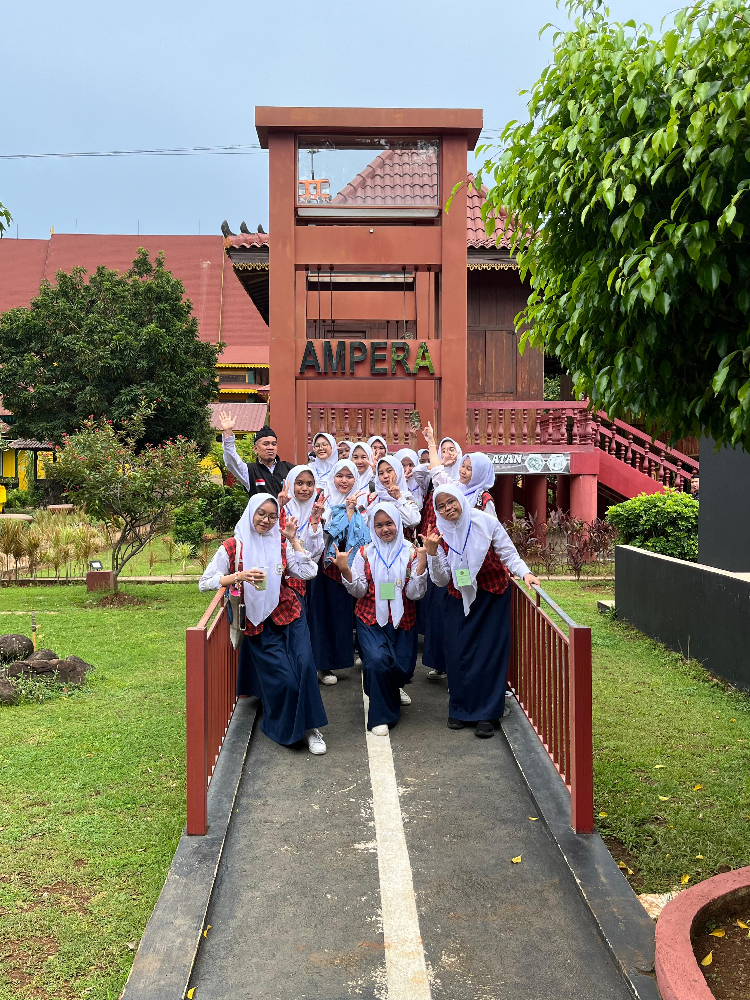
        <div class="p-6 bg-white">
          <h3 class="text-2xl font-semibold text-red-700">Jembatan Ampera Figure</h3>
          <p class="text-gray-600 text-sm mt-2 leading-relaxed">
            Temukan paviliun budaya dari seluruh provinsi di Indonesia.
          </p>
        </div>
      </div>
      <!-- Card 2 -->
      <div class="rounded-xl overflow-hidden shadow-lg transition transform hover:scale-105">
        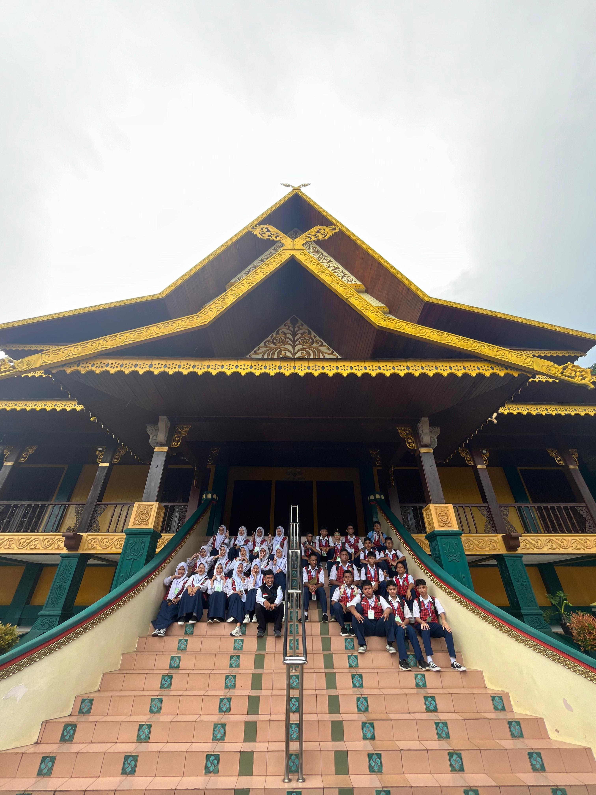
        <div class="p-6 bg-white">
          <h3 class="text-2xl font-semibold text-red-700">Rumah Adat Riau</h3>
          <p class="text-gray-600 text-sm mt-2 leading-relaxed">
            Lihat miniatur bangunan ikonik Indonesia di satu tempat.
          </p>
        </div>
      </div>
      <!-- Card 3 -->
      <div class="rounded-xl overflow-hidden shadow-lg transition transform hover:scale-105">
        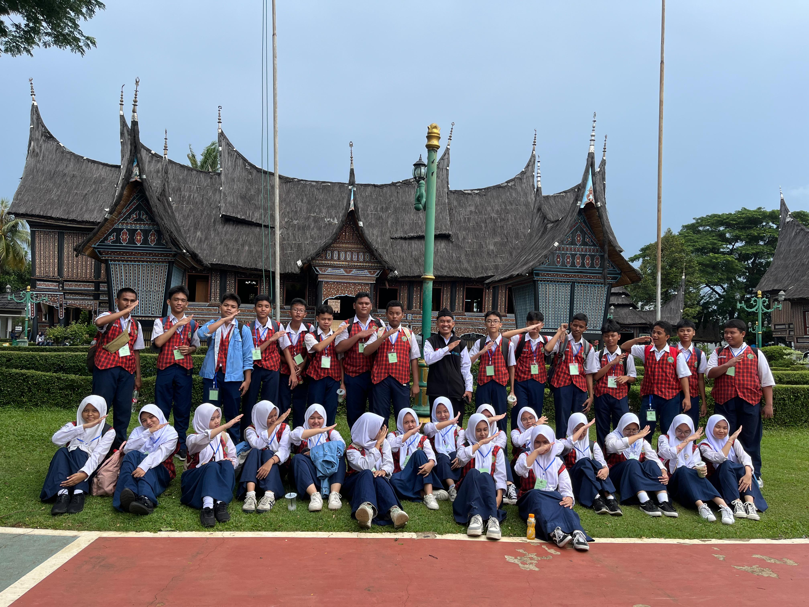
        <div class="p-6 bg-white">
          <h3 class="text-2xl font-semibold text-red-700">Rumah Adat Padang</h3>
          <p class="text-gray-600 text-sm mt-2 leading-relaxed">
            Nikmati pertunjukan seni dan budaya di area TMII.
          </p>
        </div>
      </div>
    </div>
    <!-- Embedded Video Section -->
    <div class="flex justify-center">
      <iframe 
        class="w-full max-w-4xl h-64 md:h-96 rounded-lg shadow-lg" 
        src="https://www.youtube.com/embed/ddwYJKe8KT8?si=Z9JL8JEU8AfMy331" 
        title="Video TMII" 
        frameborder="0" 
        allow="accelerometer; autoplay; clipboard-write; encrypted-media; gyroscope; picture-in-picture" 
        allowfullscreen>
      </iframe>
    </div>
  </div>
</section>


 <section id="faq" class="bg-gradient-to-r from-red-500 to-red-600 py-16">
     <div class="max-w-5xl mx-auto text-center text-white px-6">
         <!-- Title -->
         <h2 class="text-4xl font-bold mb-6">
             <i class="fas fa-question-circle mr-2"></i> Pertanyaan yang Sering Diajukan
         </h2>
         <p class="text-lg mb-10">Jelajahi jawaban atas pertanyaan umum mengenai Padang dan budaya Minangkabau.</p>

         <!-- FAQ Container -->
         <div class="space-y-6">
             <!-- FAQ Item -->
             <div class="bg-white p-6 mt-16 rounded-lg shadow-lg transition transform hover:scale-105">
                 <button 
                     class="w-full flex justify-between items-center text-left text-red-600 focus:outline-none"
                     onclick="toggleAnswer('faq1')">
                     <h3 class="text-lg font-semibold flex items-center">
                         <i class="fas fa-circle-question mr-3 text-red-400"></i> Apa yang membuat Padang unik?
                     </h3>
                     <i id="icon1" class="fas fa-chevron-down text-gray-500 transition-transform"></i>
                 </button>
                 <p id="faq1" class="hidden text-gray-700 mt-4 leading-relaxed">
                     Padang dikenal dengan budaya Minangkabau yang kaya, kuliner legendaris seperti rendang, dan arsitektur rumah gadang yang khas.
                 </p>
             </div>

             <!-- FAQ Item -->
             <div class="bg-white p-6 rounded-lg shadow-lg transition transform hover:scale-105">
                 <button 
                     class="w-full flex justify-between items-center text-left text-red-600 focus:outline-none"
                     onclick="toggleAnswer('faq2')">
                     <h3 class="text-lg font-semibold flex items-center">
                         <i class="fas fa-circle-question mr-3 text-red-400"></i> Bagaimana cara berkontribusi untuk Padang?
                     </h3>
                     <i id="icon2" class="fas fa-chevron-down text-gray-500 transition-transform"></i>
                 </button>
                 <p id="faq2" class="hidden text-gray-700 mt-4 leading-relaxed">
                     Anda bisa berkontribusi dengan mendukung pariwisata lokal, membeli produk UMKM, atau ikut serta dalam program pelestarian budaya.
                 </p>
             </div>

             <!-- FAQ Item -->
             <div class="bg-white p-6 rounded-lg shadow-lg transition transform hover:scale-105">
                 <button 
                     class="w-full flex justify-between items-center text-left text-red-600 focus:outline-none"
                     onclick="toggleAnswer('faq3')">
                     <h3 class="text-lg font-semibold flex items-center">
                         <i class="fas fa-circle-question mr-3 text-red-400"></i> Apa saja potensi wisata di Padang?
                     </h3>
                     <i id="icon3" class="fas fa-chevron-down text-gray-500 transition-transform"></i>
                 </button>
                 <p id="faq3" class="hidden text-gray-700 mt-4 leading-relaxed">
                     Beberapa destinasi wisata terkenal di Padang termasuk Pantai Air Manis, Jam Gadang di Bukittinggi, dan Lembah Harau.
                 </p>
             </div>

             <!-- FAQ Item -->
             <div class="bg-white p-6 rounded-lg shadow-lg transition transform hover:scale-105">
                 <button 
                     class="w-full flex justify-between items-center text-left text-red-600 focus:outline-none"
                     onclick="toggleAnswer('faq4')">
                     <h3 class="text-lg font-semibold flex items-center">
                         <i class="fas fa-circle-question mr-3 text-red-400"></i> Untuk apa Website ini di terbitkan?
                     </h3>
                     <i id="icon4" class="fas fa-chevron-down text-gray-500 transition-transform"></i>
                 </button>
                 <p id="faq4" class="hidden text-gray-700 mt-4 leading-relaxed">
                   Website ini di terbitkan untuk mempermudah informasi dan membantu secara visual apa itu kota padang.
                 </p>
             </div>
         </div>
     </div>
 </section>


<section class="py-12 bg-gray-50">
    <div class="container mx-auto px-6">
         <h3 class="text-3xl font-bold text-red-600 text-center  mt-32 mb-6">Kumpulan AI Terkenal</h3>
        <div class="grid gap-6 md:grid-cols-3">
            <!-- ChatGPT -->
            <div class="bg-white rounded-lg shadow-lg p-6 flex flex-col items-center">
                
                <h3 class="text-xl font-semibold text-gray-800">ChatGPT</h3>
                <p class="text-gray-600 text-center mt-2">
                    OpenAI's ChatGPT adalah AI chatbot paling populer untuk percakapan dan produktivitas.
                </p>
                <a href="https://chat.openai.com" target="_blank" 
                   class="mt-4 px-4 py-2 text-white bg-red-600 rounded-full hover:bg-red-700 transition">
                    Learn More
                </a>
            </div>

            <!-- Suno AI -->
            <div class="bg-white rounded-lg shadow-lg p-6 flex flex-col items-center">
                
                <h3 class="text-xl font-semibold text-gray-800">Suno AI</h3>
                <p class="text-gray-600 text-center mt-2">
                    Suno AI menawarkan generasi suara real-time untuk konten kreatif dan interaktif.
                </p>
                <a href="https://www.suno.ai" target="_blank" 
                   class="mt-4 px-4 py-2 text-white bg-red-600 rounded-full hover:bg-red-700 transition">
                    Learn More
                </a>
            </div>

            <!-- MidJourney -->
            <div class="bg-white rounded-lg shadow-lg p-6 flex flex-col items-center">
                
                <h3 class="text-xl font-semibold text-gray-800">MidJourney</h3>
                <p class="text-gray-600 text-center mt-2">
                    MidJourney adalah AI generatif untuk menciptakan seni digital yang memukau.
                </p>
                <a href="https://www.midjourney.com" target="_blank" 
                   class="mt-4 px-4 py-2 text-white bg-red-600 rounded-full hover:bg-red-700 transition">
                    Learn More
                </a>
            </div>
        </div>
    </div>
</section>


 <!-- Kontak -->
 <section id="kontak" class="py-16 px-8 bg-white mt-16 relative overflow-hidden">
   <div class="absolute inset-0 bg-cover bg-center" style="background-image: url('https://files.catbox.moe/z051ee.png'); opacity: 0.4;"></div>
   <div class="relative z-10">
     <h2 class="text-4xl font-bold text-center text-red-600 mb-8">Kontak Kami</h2>
     <p class="text-center text-gray-700 mb-12 max-w-2xl mx-auto">
       Hubungi kami untuk pertanyaan, masukan, atau informasi lebih lanjut. Kami senang mendengar dari Anda!
     </p>
     <form action="https://formspree.io/f/meoqazvj" method="POST" class="max-w-lg mx-auto bg-white p-8 rounded-lg shadow-lg">
       <!-- Input Nama -->
       <div class="mb-6">
         <label class="block text-gray-700 font-bold mb-2" for="name">
           <i class="fas fa-user text-red-600 mr-2"></i> Nama
         </label>
         <input type="text" id="name" name="name" 
           class="w-full px-4 py-2 border border-gray-300 rounded focus:ring focus:ring-red-200 focus:border-red-600" 
           placeholder="Masukkan nama Anda" required>
       </div>
       <!-- Input Email -->
       <div class="mb-6">
         <label class="block text-gray-700 font-bold mb-2" for="email">
           <i class="fas fa-envelope text-red-600 mr-2"></i> Email
         </label>
         <input type="email" id="email" name="email" 
           class="w-full px-4 py-2 border border-gray-300 rounded focus:ring focus:ring-red-200 focus:border-red-600" 
           placeholder="Masukkan email Anda" required>
       </div>
       <!-- Input Pesan -->
       <div class="mb-6">
         <label class="block text-gray-700 font-bold mb-2" for="message">
           <i class="fas fa-comment text-red-600 mr-2"></i> Pesan
         </label>
         <textarea id="message" name="message" rows="5" 
           class="w-full px-4 py-2 border border-gray-300 rounded focus:ring focus:ring-red-200 focus:border-red-600" 
           placeholder="Tulis pesan Anda di sini..." required></textarea>
       </div>
       <!-- Tombol Kirim -->
       <button type="submit" 
         class="w-full bg-red-600 hover:bg-red-700 text-white font-bold py-2 px-4 rounded transition duration-200">
         <i class="fas fa-paper-plane mr-2"></i> Kirim Pesan
       </button>
     </form>
   </div>
 </section>


    <!-- Footer -->
    <footer class="bg-red-600 text-white py-6 relative">
        <div class="absolute inset-0 opacity-20">
            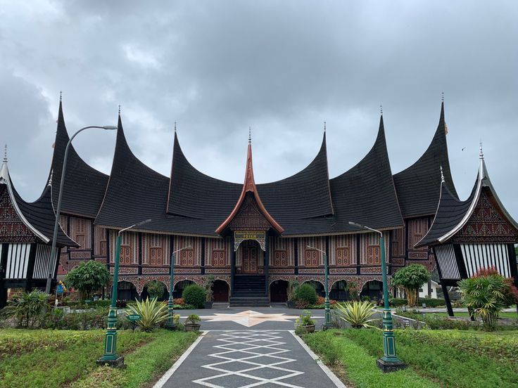
        </div>
        <div class="relative z-10 container mx-auto px-4">
            <div class="flex flex-col md:flex-row justify-between items-center">
                <div class="text-center md:text-left mb-4 md:mb-0">
                    <h2 class="text-2xl font-bold">Padang Wonderland</h2>
                    <p class="text-sm">Mengungkap keindahan dan kebudayaan Padang Nyaman Di pandang</p>
                </div>
                <div class="flex flex-col md:flex-row items-center space-y-2 md:space-y-0 md:space-x-4">
                    <a href="#home" class="hover:text-gray-300">Home</a>
                    <a href="#tentang" class="hover:text-gray-300">Tentang</a>
                    <a href="#wisata" class="hover:text-gray-300">Wisata Alam</a>
                    <a href="#budaya" class="hover:text-gray-300">Budaya</a>
                    <a href="#kontak" class="hover:text-gray-300">Kontak</a>
                </div>
            </div>
            <p class="text-sm text-center mt-4">&copy; 2024 Padang indah. Semua Hak Dilindungi.</p>
            <div class="mt-2 flex justify-center">
                <a href="https://facebook.com/papuaindahgrouprakz" class="text-gray-300 hover:text-white mx-2">
                    <i class="fab fa-facebook"></i>
                </a>
                <a href="https://twitter.com/papuaindahgrouprakz" class="text-gray-300 hover:text-white mx-2">
                    <i class="fab fa-twitter"></i>
                </a>
                <a href="https://instagram.com/papuaindahgrouprakz" class="text-gray-300 hover:text-white mx-2">
                    <i class="fab fa-instagram"></i>
                </a>
            </div>
        </div>
    </footer>

    <script src="https://unpkg.com/aos@2.3.1/dist/aos.js"></script>
    <script>
      AOS.init();
    </script>

<script src="src/slide.js"></script>
<script src="src/warning.js"></script>
<script src="src/navbar.js"></script>
<script src="src/faq.js"></script>

</body>
</html>
